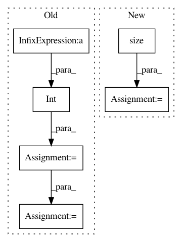

f668123151812480874a573cddd71c25a20c14a4,pytorch/pytorchcv/models/others/oth_irevnet2.py,psi,inverse,#psi#Any#,47
Before Change
def inverse(self, input):
output = input.permute(0, 2, 3, 1)
(batch_size, d_height, d_width, d_depth) = output.size()
s_depth = int(d_depth / self.block_size_sq)
s_width = int(d_width * self.block_size)
s_height = int(d_height * self.block_size)
t_1 = output.contiguous().view(batch_size, d_height, d_width, self.block_size_sq, s_depth)
spl = t_1.split(self.block_size, 3)
stack = [t_t.contiguous().view(batch_size, d_height, s_width, s_depth) for t_t in spl]
output = torch.stack(stack, 0).transpose(0, 1).permute(0, 2, 1, 3, 4).contiguous().view(batch_size, s_height, s_width, s_depth)
output = output.permute(0, 3, 1, 2)
After Change
def inverse(self, y):
scale_sqr = self.scale * self.scale
batch, y_channels, y_height, y_width = y.size()
assert (y_channels % scale_sqr == 0)
x_channels = y_channels // scale_sqr
x_height = y_height * self.scale
x_width = y_width * self.scale
In pattern: SUPERPATTERN
Frequency: 3
Non-data size: 6
Instances
Project Name: osmr/imgclsmob
Commit Name: f668123151812480874a573cddd71c25a20c14a4
Time: 2019-03-05
Author: osemery@gmail.com
File Name: pytorch/pytorchcv/models/others/oth_irevnet2.py
Class Name: psi
Method Name: inverse
Project Name: osmr/imgclsmob
Commit Name: f668123151812480874a573cddd71c25a20c14a4
Time: 2019-03-05
Author: osemery@gmail.com
File Name: pytorch/pytorchcv/models/others/oth_irevnet2.py
Class Name: psi
Method Name: forward
Project Name: layumi/Person_reID_baseline_pytorch
Commit Name: e9d5373461b0a037716722a461cb12416aa5d1bc
Time: 2018-01-01
Author: zzheng@joo-ml1-dev.j.cinglevue.com
File Name: test.py
Class Name:
Method Name: extract_feature